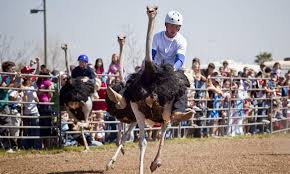

Las carreras de avestruces son un deporte en el que los jinetes compiten entre sí montados en el lomo de avestruces.. A veces carros, sillas de montar o carros se utilizan para montar el avestruz.
Las reglas son simples, los contendientes se suben a lomos de su ave, agarrarlos por sus plumas y montarlos a través de la pista.
Las avestruces no son tan fáciles de montar o controlar como otros animales, ellas temblarán, saltarán, y tratarán de deshacerse de sus jinetes, que a menudo terminan cayéndose y dejando que el avestruz complete la carrera por sí misma.
En el Festival del Avestruz de Chandler, las avestruces se conducen en un estilo conocido como “espalda de pluma”, y los jinetes hacen todo lo posible para sujetar a sus avestruces mientras corren a altas velocidades de 30 millas por hora. Ocasionalmente, las carreras de avestruces se realizan con la ayuda de carros o sillas de montar, aunque esto solía ser más común en el pasado.
Haga click en cada deporte para poder ver de donde es sacada la información:
-Carrera de avestruz-----------Polo en elefantes-----------Chess-boxing-----------Ciclobol